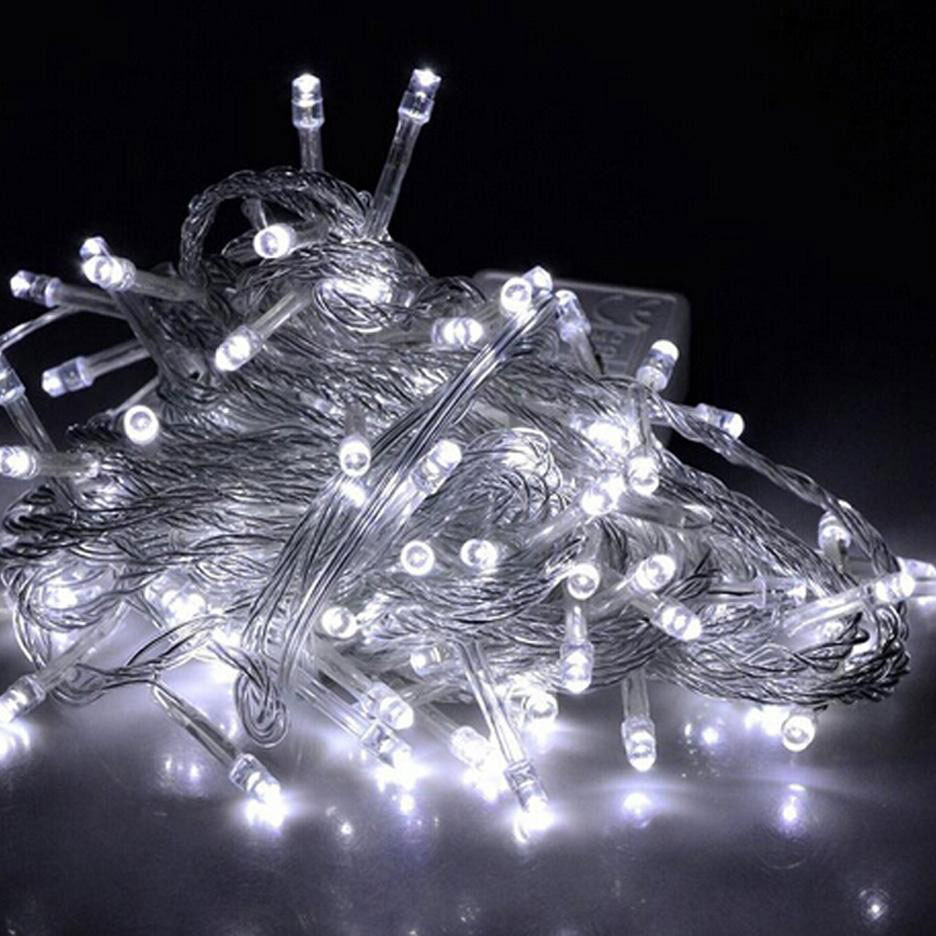

Елка
Елка стала символом Нового года благодаря традиции украшать дерево на зимнее солнцестояние. В разных странах на елку вешают не только игрушки, но и съедобные украшения.
Узнать больше
Новогодние игрушки
Первые новогодние игрушки появились в Германии и были сделаны из стекла, чаще всего в форме яблок, символизирующих плодородие.
Узнать больше

Электрическая гирлянда
Первая электрическая гирлянда была создана в 1882 году помощником Томаса Эдисона, Эдвардом Джонсоном, который украсил ель разноцветными лампочками. Это стало настоящим прорывом, так как ранее использовали свечи, что было небезопасно.
Узнать больше